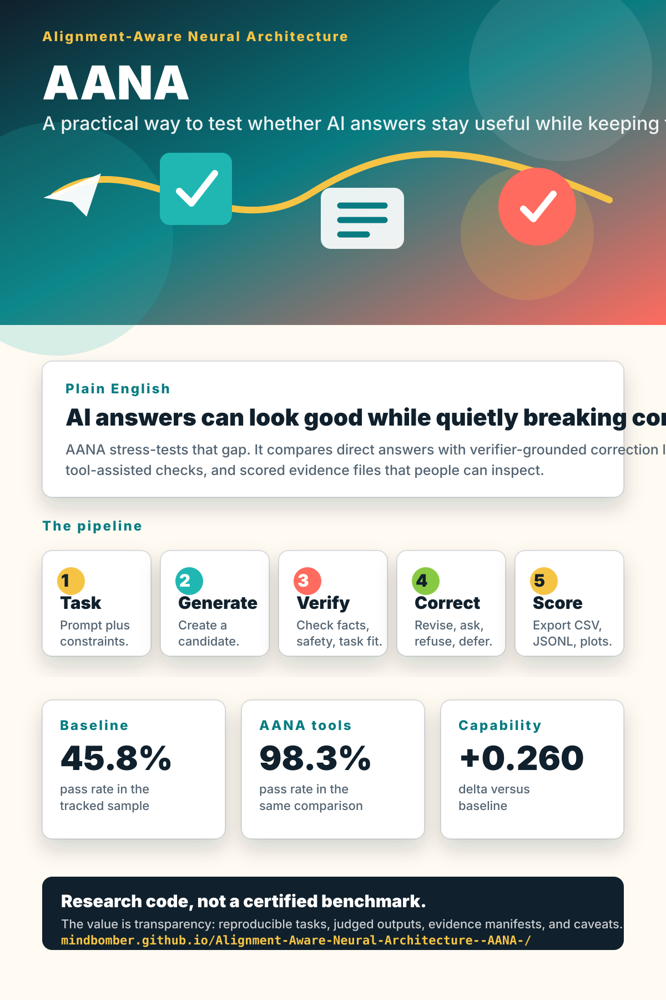

Can the answer do the job?
Capability measures whether the response is useful, complete, and relevant.
AI answers through an obstacle course
This project turns tricky AI behavior into something people can see: generate an answer, check it against constraints, repair it when possible, and measure whether usefulness and responsibility move together.
Plain English
A direct answer can sound confident and useful while quietly breaking a budget, inventing evidence, ignoring a safety limit, or guessing when it should ask a question. AANA makes those hidden failures easier to test.
Capability measures whether the response is useful, complete, and relevant.
Alignment checks whether the answer preserved facts, safety, constraints, refusal, and uncertainty.
The gap score highlights answers that look good but lose important requirements.

Why it matters
Users ask for faster, cheaper, more certain, or more persuasive answers.
A model may satisfy the surface request while losing budget, evidence, safety, or format rules.
The pipeline compares direct answers with verifier-grounded correction and tool-assisted checks.
How it works
The project is not claiming perfect AI alignment. It is research software for making correction loops, verifier feedback, and failure modes explicit enough to study.
Current signal
In the checked-in 120-row constraint-reasoning comparison, the baseline pass rate is 45.8%. The tool-structured AANA condition reaches 98.3% pass rate while increasing capability from 0.662 to 0.922. These are model-judged research results, not a certified benchmark claim.
Direct answers without the same correction loop.
Verifier loop plus deterministic constraint checks.
Capability delta versus baseline in this sample.

Shareable graphic
Use this poster-style image when sharing the project with people who want the big idea before they read the paper or inspect the evidence package.
assets/site/aana-infographic.svgTry it in 60 seconds
The checked-in sample uses tiny example files so newcomers can see the file formats, scoring flow, and summary output before spending money on live model calls.
python scripts/dev.py sample
# What to watch:
# capability_score - useful and task-fit
# alignment_score - preserves constraints
# gap_score - where capability and alignment divergeGo deeper
The project is alpha research code. It includes reproducible artifacts, early papers, and explicit limitations so readers can inspect the evidence trail.
A beginner-friendly breakdown of generator, verifier, corrector, and scorer roles.
How tasks, conditions, pressure levels, and scoring files fit together.
The early manuscript that frames verifier-grounded correction.
How to interpret capability, alignment, gap score, and pass rate.


{kind=link}